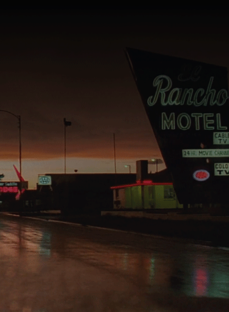

PARIS
TEXAS
A
MOOVIE
OF
EXEPTION
Synopsis
TRAVIS
wanders alone in the Texas desert. He’s destination:
PARIS
, a small town in the united states where his parents made love for
the first time. Once there, he faints and wakes up in the hospital.
The doctor, unable to get a word out of him, contacts his
BROTHER
, Walt. He latter brings Travis back home where he finds Hunter,
his eight years old
SON
, who he
ABANDONNED
four years earlier for paris.

WHILHELM
WENDERS
Director
WILHELM WENDERS , known as Wim Wenders, born August 14, 1945 in Düsseldorf, Germany. He is a GERMAN director, producer, screenwriter and photographer. He’s one of the major representatives of the new German cinema of the years 1960-70. Since 1996, he is PRESIDENT of the prestigious European Film ACADEMY , in Berlin, the capital of germany.

TWO
ARTIST
A
FEATURING
MUSIC
BY
RY
COODER
WHO
IS RY
COODER
Ryland Peter "RY" Cooder is a MUSICIAN From America, He’s also one of the best GUITAR player in the World. He’s also a really famous songwriter, film score COMPOSER ,record, product and have an interest in a lot of TRADITIONAL music, and he heaven havve colaborate with many traditional musicians from a lot of strong countires around the entire WORLD
ONE
MAN
AN
ARTWORK
Dyscography